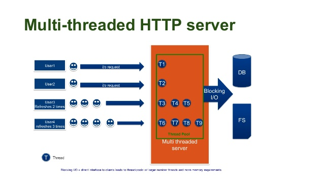

Node.js
Desenvolvendo aplicações web não bloqueantes
Por: Alexssandro A. Reis
Alexssandro A. Reis
Analista de sistemas na Affero Lab
GDG organizer
E-mail: alexssandroreis@gmail.com
Linkedin: Alexssandro A. Reis
Twitter: @alereis
Usuários ativos de internet no mundo
- EUA: 198 milhões
- Japão: 60 milhões
- Brasil: 53 milhões
Como atender tantos usuários?
- Escalonamento vertical
- Escalonamento horizontal
Escalonamento vertical
- Alto custo
- Baixa disponibilidade
Escalonamento horizontal
- Alta disponibilidade
Problemas encontrados
- Baixa concorrência
- Chamadas síncronas
Thread por conexão

Como resolver?
- Event loop
- Single thread
- Chamadas assíncronas
O que é o Node.js
- Javascript V8
- Servidor web
- Event loop
- Single thread
Em que Node é bom?
- Gerenciar filas de concorrência
- Real-time
- Servidores de imagens
Em que Node é ruim?
- Sistemas transacionais
- Aplicação direta com bancos relacionais
Event loop
- Não bloqueante
- Baixo consumo de recursos
- Velocidade

Multi X Single thread
Chamadas Sync X Assync
Exemplo
var http = require('http');
var server = http.createServer(function(request, response){
response.writeHead(200, {"Content-Type": "text/html"});
response.write("Hello World!
");
response.end();
});
server.listen(3000, function() {
console.log("Servidor rodando!");
})